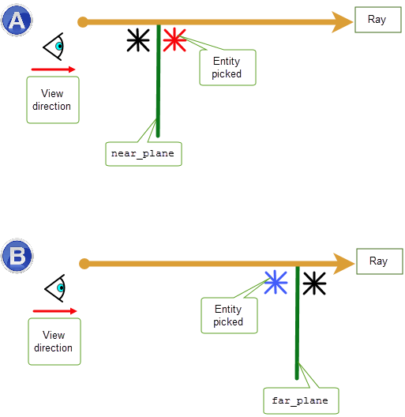

| |
Picking Topology |
| <<< Parasolid View Matrices | Chapters | Introduction To Session Support >>> |
PK_BODY_pick_topols selects faces, edges or vertices (or combinations of these entities) from an array of bodies based on whether those entities intersect, or are within a specified tolerance of, a straight line ray defined using a location and a unit vector. The ray is defined in the same (world) coordinate system as the bodies. If an array of transforms is provided in
body_transfs
, then entities are picked from the body instances defined by those transforms, rather than the bodies themselves. Instance transforms can contain translation, reflection, rotation and uniform scaling, but not non-uniform scaling, shearing or perspective terms.
For an example of this functionality, see the code example in the
C++\Code Examples\Inquiries\Model
Analysis\Picking
folder, located in
example_applications
in your Parasolid installation folder.
When picking faces, the ray must always intersect the face. When picking edges and vertices, the ray should come within a specified distance of the edge or vertex. See Section 112.2, “Controlling the number and type of entities selected”, for more information.
You can use the
max_faces
,
max_edges
, and
max_vertices
options to control the maximum number of those entity types that you want PK_BODY_pick_topols to return. By default, PK_BODY_pick_topols returns only a single face.
You can change these options to find, for example:
|
|
A face is considered picked when the ray intersects it. This is not possible with edges and vertices, however. Therefore, when picking edges and vertices, you should also set the
max_edge_dist
and
max_vertex_dist
options to specify the maximum distance that is allowed between the ray and either a vertex or edge for it to be considered selected.
When picking faces, you can use the
geom_classes
option to filter the results such that only faces attached to certain surface classes are selected.
By default, Parasolid warns you if the potential number of picked entities exceeds these specified maximum values. This is done by returning the count of excess faces, edges or vertices, in the
e_faces
,
e_edges
, and
e_vertices
fields of the return structure respectively.
When picking faces (
max_faces
> 0), you can improve the performance of PK_BODY_pick_topols by setting the
ignore_excess_entities
option to PK_LOGICAL_true. This sets
e_faces
,
e_edges
, and
e_vertices
to 0 and stops PK_BODY_pick_topols searching for further intersections with faces once the number of selected faces is equal to
max_faces
.
Instead of picking topologies from the provided array of bodies, you can choose to pick from a subset of topologies from the supplied array. Where you can supply this context, limiting the set of picking topologies can improve the performance of PK_BODY_pick_topols. To use this functionality, the following options must be set:
If you are working with bodies that have been created at different scales, you can use the
bodies_with_scales
and
scale_factors
option to specify the scale at which input bodies were created. Each entry supplied in
bodies_with_scales
has a corresponding entry in the
scale_factors
array that indicates the scale relative to the smallest entity or the session if smaller.
Note: If
body_transfs
are specified, transforms will only be applied after scaling has occurred. |
You can optionally choose to specify a factor by which the picking ray will be scaled by using the
ray_scale_factor
option. If this option is set to any value other than PK_scale_factor_1x_c, then
max_edge_dist
,
max_vertex_dist
,
near_point
, and
far_point
options will also be scaled at the same factor used for the ray.
Note: No scaling is applied to the picking ray if
ray_scale_factor
is set to PK_scale_factor_1x_c |
For more information on scaling factors and modelling with parts represented at different scales, see Chapter 23, “Distant and Multi-scale Modelling”.
You can use the
near_plane
and
far_plane
options to restrict which entities in model space can be selected by PK_BODY_pick_topols:
near_plane |
If you use this option, PK_BODY_pick_topols only picks entities near the ray that lie behind the specified plane as shown in Figure 112-1(A). In this case the red entity is picked. |
far_plane |
If you use this option, PK_BODY_pick_topols only picks entities near the ray that lie in front of the specified plane as shown in Figure 112-1(B). In this case the blue entity is picked. |
Using these options can improve the performance of PK_BODY_pick_topols.
Figure 112-1 Restricting which entities can be selected by PK_BODY_pick_topols
You can use the
method
option to control the order in which edges and vertices are returned by PK_BODY_pick_topols. This option allows you to choose between the following values:
|
Return entities in the order they are encountered along the ray. This is the default. See Section 112.6.1. |
|
|
Return entities in the order they are encountered along the ray from an absolute location. See Section 112.6.2, “Axial ordering by absolute distance”. |
|
|
Return entities in the order of their distance from the ray. See Section 112.6.3. |
|
|
Return entities using a combination of the axial and radial methods. See Section 112.6.4, “Ratio ordering”. |
The default method of ordering picked entities in the return structure of PK_BODY_pick_topols is known as axial ordering. With this method, entities are returned in the order of their relative positions along the specified ray, measured in the same direction as the ray.
Figure 112-2 shows four edges (viewed end-on) that are within
max_edge_dist
of the specified ray. When
method
is PK_BODY_pick_axial_c they are returned in the order ABCD.
Figure 112-2 Axial ordering of edges and vertices along a ray
The axial ordering method allows faces, edges and vertices to be picked at the same time using the same ordering method. This is appropriate when simulating picking edges and vertices from a hidden-line drawing, when only those entities which are closest to the eye-point can be considered as candidates for picking.
If you are picking faces from a hidden-line drawing, ensure that the
ignore_back_faces
option is PK_LOGICAL_true (this is its default value). In all other cases, set
ignore_back_faces
to PK_LOGICAL_false. .
You can also choose to return entities based on an axial ordering that uses an absolute value based on the
location
supplied in the definition of the ray. When using this ordering, the first entity returned is the entity that is closest to the supplied
location
along the ray
in either direction.
Figure 112-3 shows four edges (viewed end-on) that are within
max_edge_dist
of the specified ray. When
method
is PK_BODY_pick_axial_location_c they are returned in the order ABCD. Because the ray’s
location
is taken into account, the order of entities is different compared to axial ordering (as shown in
Figure 112-2).
Figure 112-3 Absolute axial ordering of edges and vertices along a ray
This method can be useful, for example, to find the front and back faces of a thin walled body, given a
location
on the mid-surface of the wall. To do this for a single pair of faces, set
max_faces
= 2,
ignore_back_faces
= PK_LOGICAL_false, and
ignore_excess_entities
= PK_LOGICAL_true.
You can also choose to return entities according to the radial distance between an edge or vertex and the ray.
The radial ordering method can be used to provide your users with a method for picking edges and vertices from a wire-frame drawing on a screen, where the closest entities are those which appear closest to the screen cursor.
Figure 112-4 shows four edges (viewed end-on) that are within
max_edge_dist
of the specified ray. When
method
is PK_BODY_pick_radial_c they are returned in the order ABCD.
Figure 112-4 Radial ordering of edges and vertices along a ray
A final method of ordering entities, ratio ordering, provides a way of combining both the axial and radial ordering methods. To use this method, you supply an additional ratio option. Radial and axial methods are then used in different proportions to calculate an entity ordering, depending on the value of ratio supplied.
See the documentation for PK_BODY_pick_topols_o_t in the PK Interface Programming Reference Manual for more information on exactly how entities are ordered using a supplied ratio when ratio ordering is chosen.
This section discusses performance and reliability issues relating to PK_BODY_pick_topols.
By default, PK_BODY_pick_topols uses approximate representations of curves in a body, rather than accurate geometry. You can choose the degree of approximation by specifying tolerance values in PK_BODY_pick_topols_o_t. You are strongly recommended to use approximate representations of curves in a body to improve the performance of PK_BODY_pick_topols.
|
Warning: When using approximate picking, intersection point and distance values returned by PK_BODY_pick_topols are approximate, and must not be used as arguments to modelling functions. |
If necessary, you can force PK_BODY_pick_topols to use accurate geometry rather than an approximation by setting the
pick_approx
option in PK_BODY_pick_topols_o_t to PK_pick_approximate_no_c.
If you are making a large number of calls to PK_BODY_pick_topols, you may be able to improve performance by using accurate picking and pre-populating faces on the body with approximate edge representations. To do this:
|
Pass in all the faces of the bodies from which you want to select topology. This creates an approximate representation of the edges in those faces, which can then be used by PK_BODY_pick_topols. |
|
|
PK_BODY_pick_topols, with pick_approx set to PK_pick_approximate_no_c |
For each call to PK_BODY_pick_topols, ensure that accurate picking is used. PK_BODY_pick_topols uses the approximate edge representations you have already created. |
|
After the calls to PK_BODY_pick_topols, call this function with the same set of faces as you used for PK_FACE_set_approx. This removes the approximate representations of those faces, allowing you to continue with modelling. |
|
|
If you use PK_BODY_pick_topols to provide your users with functionality to select displayed entities on screen, you should use the function in conjunction with PK_TOPOL_render_line, so that entities that have been rendered previously can be checked for intersection or proximity to a ray which passes through the current view point and in the current viewing direction (transformed from 2-D screen coordinates into 3-D world coordinates). See Section 112.7.1, “Approximate versus accurate picking” for more information.
|
Note: To enhance performance and reliability, PK_BODY_pick_topols should be called with the
same chordal tolerance values as used in preceding calls to PK_TOPOL_render_line. These tolerance values can be found in the Parasolid Report returned by PK_TOPOL_render_line. See Section 107.2, “Curve approximation tolerances” for more information. |
| <<< Parasolid View Matrices | Chapters | Introduction To Session Support >>> |